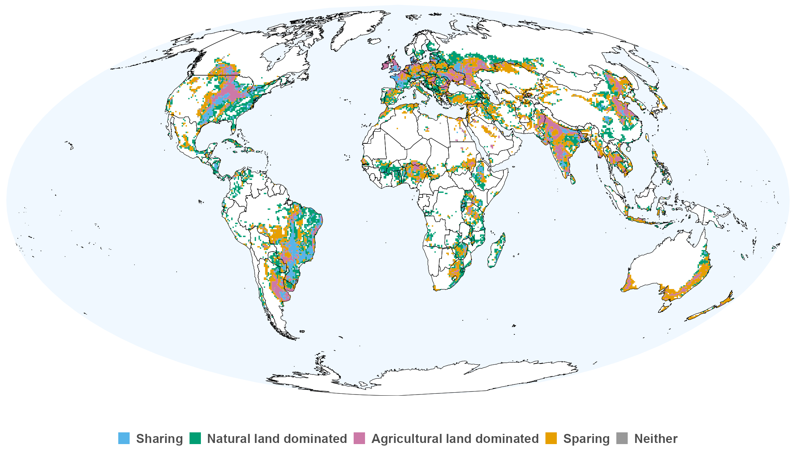

I build spatial models and global geospatial pipelines to understand how land use, biodiversity, and ecosystem services interact across scales. Based in Brisbane. Open to postdoctoral positions.
Affiliation
Queensland University of Technology
School of Biology & Environment Sciences
Contact
ORCID
Land use · Global
Multi-resolution global land-use typology spanning two decades, classifying landscapes into five classes (Natural-dominant, Agricultural-dominant, Sharing, Sparing, Neither) using beta distribution fitting on paired biodiversity-yield gradients.

Ecosystem services · Trade
Integrated trade models and Nature's Contributions to People (NCP) framework to quantify how global commodity trade transfers ecosystem service burdens across national boundaries. Subnational analysis revealed that 77–89% of NCP variance lies within countries rather than between them — challenging country-level aggregation common in global assessments.
Causal inference · Agriculture
Joint GPS causal inference framework using stabilised inverse-probability weights (IPW) for two simultaneous continuous treatments — agricultural intensity and conservation effort — to disentangle their independent and interactive effects on biodiversity outcomes at global scale.
Climate connectivity · Africa
Directed network framework modelling potential species movement corridors under climate change across Africa. Used Voronoi tessellations, queen contiguity graphs, and least-cost path algorithms to build a climate-velocity-weighted directed network, enabling graph-theoretic analysis of landscape permeability and bottlenecks.
Protected areas · Climate
Global analysis of protected area exposure to climate velocities using a CORDEX ensemble of regional climate projections. Quantified which protected areas face velocities exceeding dispersal thresholds, identifying climate refugia and high-exposure regions requiring corridor investments. Published in Nature Climate Change.
Agricultural intensity · Global
Multi-source raster pipeline producing a harmonised global agricultural intensity layer at 5 arcmin resolution, mosaicked and re-projected to Mollweide. Multi-panel map figures produced with patchwork / cowplot using colorblind-safe Okabe–Ito palettes for five land-use classes.